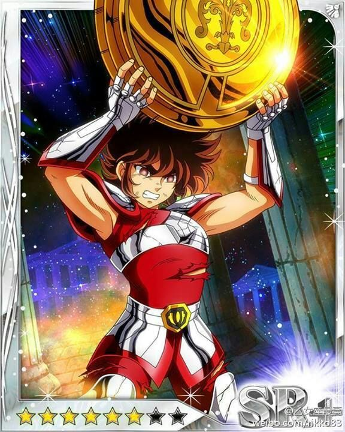

Seiya-pegaso
- anime
- personajes principales
- caracteristicas
-
caballeros de zodiaco
El argumento de la serie se centra en la historia de un grupo de jóvenes guerreros denominados «santos» (o «caballeros» en varias traducciones), quienes luchan por proteger a la diosa griega Atenea de las fuerzas del mal que quieren dominar la Tierra.
- Seiya

caracteristicas